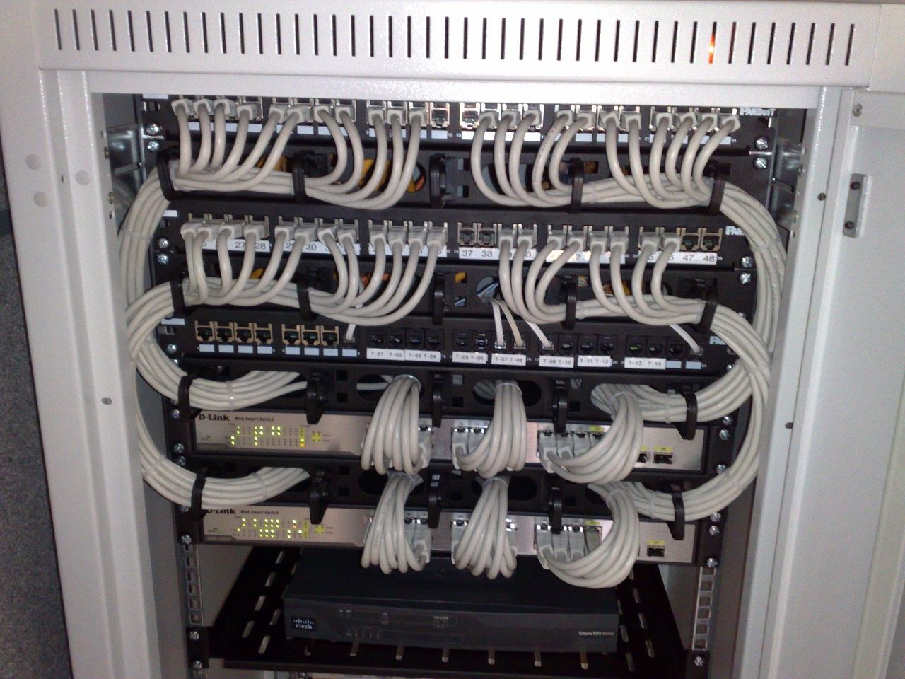

Cosmos serahkan protokol interoperabilitas IBC ke Linux Foundation Decentralized TrustCosmos hands its IBC interoperability protocol to Linux Foundation Decentralized Trust
Cosmos dan Interchain Foundation menyerahkan Inter-Blockchain Communication Protocol (IBC) ke LF Decentralized Trust, organisasi di bawah Linux Foundation. Kode IBC tetap open source dan bebas biaya, tetapi tata kelolanya kini berada di bawah piagam proyek publik yang netral.Cosmos and the Interchain Foundation have contributed the Inter-Blockchain Communication Protocol (IBC) to LF Decentralized Trust, an organization under the Linux Foundation. IBC's code stays open source and fee-free, but its governance now sits under a neutral public project charter.

Poin utamaKey points
- Pengumuman disampaikan Senin (9/11/2026) lewat siaran pers resmi dan blog Cosmos. IBC kini menjadi proyek LF Decentralized Trust (LFDT).
- IBC adalah protokol open source yang memungkinkan blockchain atau ledger yang berbeda saling bertukar aset dan data. Menurut siaran pers, sejak 2021 IBC telah memproses volume transaksi lebih dari US$50 miliar di lebih dari 115 jaringan.
- Kode tetap open source dengan lisensi Apache 2.0, dan piagam proyek menjaga lapisan protokol bebas dari biaya atau monetisasi. Merek dagang IBC dipegang Linux Foundation atas nama proyek.
- Pengelola kode (maintainer) awal adalah Cosmos Labs, Datachain, dan OpenZeppelin. Insinyur Cosmos Labs memimpin Komite Pengarah Teknis selama dua tahun pertama.
- Langkah ini didukung Google Cloud serta individu dari sejumlah organisasi, termasuk Wells Fargo, Figure Markets, dan Cardano Foundation.
- The announcement was made on Monday (9/11/2026) through an official press release and a Cosmos blog post. IBC is now a project of LF Decentralized Trust (LFDT).
- IBC is an open-source protocol that lets different blockchains or ledgers exchange assets and data. According to the press release, IBC has processed more than US$50 billion in transaction volume across more than 115 networks since 2021.
- The code remains open source under the Apache 2.0 license, and the project charter keeps the protocol layer free of fees or monetization. The IBC trademark is held by the Linux Foundation on behalf of the project.
- The initial code maintainers are Cosmos Labs, Datachain and OpenZeppelin. Cosmos Labs engineers chair the Technical Steering Committee for the first two years.
- The move is supported by Google Cloud and individuals from a number of organizations, including Wells Fargo, Figure Markets and the Cardano Foundation.
Cosmos, penyedia teknologi digital ledger open source, dan Interchain Foundation, lembaga nirlaba yang mendukung ekosistem Cosmos, mengumumkan pada Senin (9/11/2026) bahwa Inter-Blockchain Communication Protocol (IBC) diserahkan ke LF Decentralized Trust, organisasi Linux Foundation untuk pengembangan sistem dan teknologi terdesentralisasi. Siaran pers dirilis di New York pukul 09.00 waktu setempat, atau 22.00 WITA (14.00 UTC).
IBC adalah protokol interoperabilitas yang memungkinkan jaringan yang berdiri sendiri saling memverifikasi pesan secara langsung, tanpa perantara pihak ketiga. Menurut LFDT, spesifikasinya tidak terikat bahasa pemrograman, dengan implementasi dalam Go untuk jaringan Cosmos, Solidity untuk jaringan EVM termasuk Besu dan Ethereum, serta Rust. Protokol ini tidak memungut biaya dan tidak mewajibkan token tertentu.
Siaran pers menyebut IBC telah memproses volume transaksi lebih dari US$50 miliar di lebih dari 115 jaringan sejak 2021. Di blognya, Cosmos menyebut IBC dipakai di lebih dari 200 jaringan selama lebih dari lima tahun. Kedua angka berasal dari pihak Cosmos dan belum diverifikasi secara independen.
Menurut penjelasan di forum resmi Cosmos, Linux Foundation memegang merek dagang IBC atas nama proyek, kode tetap open source di bawah lisensi Apache 2.0, dan keputusan teknis berada di tangan para maintainer serta Komite Pengarah Teknis di bawah piagam teknis publik. Cosmos Labs, Datachain, dan OpenZeppelin menjadi maintainer, dan insinyur Cosmos Labs memimpin komite pada masa jabatan dua tahun pertama.
Siaran pers menyebut langkah ini didukung Google Cloud serta individu dari berbagai organisasi, antara lain Agoric, Cardano Foundation, Cosmos Labs, Datachain, Figure Markets, Injective Labs, OpenZeppelin, Turnkey, dan Wells Fargo. Cosmos menyatakan tujuannya adalah membangun standar interoperabilitas bersama yang aman dan memperkuat kolaborasi industri untuk modernisasi keuangan.
Cosmos, an open-source digital ledger technology provider, and the Interchain Foundation, the non-profit that supports the Cosmos ecosystem, announced on Monday (9/11/2026) that the Inter-Blockchain Communication Protocol (IBC) is being contributed to LF Decentralized Trust, the Linux Foundation's organization for the development of decentralized systems and technologies. The press release was issued in New York at 09:00 local time, or 22:00 WITA (14:00 UTC).
IBC is an interoperability protocol that lets independent networks verify each other's messages directly, without a third-party intermediary. According to LFDT, its specifications are programming-language agnostic, with implementations in Go for Cosmos networks, Solidity for EVM networks including Besu and Ethereum, and Rust. The protocol charges no fees and does not require a specific token.
The press release says IBC has processed more than US$50 billion in transaction volume across more than 115 networks since 2021. On its blog, Cosmos says IBC has been used across more than 200 networks over more than five years. Both figures come from Cosmos and have not been independently verified.
According to an explanation on the official Cosmos forum, the Linux Foundation holds the IBC trademark on behalf of the project, the code stays open source under the Apache 2.0 license, and technical decisions rest with the maintainers and a Technical Steering Committee under a public technical charter. Cosmos Labs, Datachain and OpenZeppelin are the maintainers, and Cosmos Labs engineers chair the committee for the first two-year term.
The press release says the move is supported by Google Cloud and individuals from various organizations, including Agoric, Cardano Foundation, Cosmos Labs, Datachain, Figure Markets, Injective Labs, OpenZeppelin, Turnkey and Wells Fargo. Cosmos said the goal is to build secure, shared interoperability standards and strengthen industry collaboration for financial modernization.
Kenapa pentingWhy it matters
Bank dan lembaga keuangan yang mulai menguji tokenisasi aset butuh standar penghubung antar-blockchain yang tidak dikuasai satu perusahaan. Menaruh IBC di bawah Linux Foundation, rumah proyek seperti Linux dan Kubernetes, bisa membuat protokol ini lebih mudah diterima institusi.Banks and financial institutions that are starting to test asset tokenization need cross-blockchain standards that no single company controls. Placing IBC under the Linux Foundation, home to projects such as Linux and Kubernetes, could make the protocol easier for institutions to accept.
Karena IBC tidak mewajibkan token tertentu, langkah ini lebih tentang adopsi teknologi oleh institusi daripada dampak langsung ke harga token ekosistem Cosmos seperti ATOM. Yang perlu dicermati adalah apakah bank atau proyek tokenisasi benar-benar mulai memakai IBC setelah tata kelolanya netral. Ini interpretasi, bukan prediksi harga.Because IBC does not require a specific token, this move is more about institutional technology adoption than a direct impact on the price of Cosmos ecosystem tokens such as ATOM. The thing to watch is whether banks or tokenization projects actually start using IBC now that its governance is neutral. This is interpretation, not a price prediction.
Foto: switch Ethernet dan patch panel di rak 19 inci (Dsimic, CC BY-SA 4.0, Wikimedia Commons). Foto ilustrasi.Photo: Ethernet switches and patch panels in a 19-inch rack (Dsimic, CC BY-SA 4.0, Wikimedia Commons). Illustrative photo.
SumberSources
- PR Newswire: Cosmos Contributes IBC to Linux Foundation Decentralized Trust (siaran pers resmi)
- Cosmos Blog: IBC is becoming an LF Decentralized Trust Project
- LF Decentralized Trust: Advancing Open Interoperability Through IBC's Contribution
- Cosmos Forum: IBC joins the Linux Foundation Decentralized Trust
Ikuti COIN BRO diFollow COIN BRO on Telegram
Dapatkan berita seperti ini lebih cepat di channel kami. Gratis.Get news like this faster on our channel. Free.
Bukan saran finansial. Artikel ini adalah informasi dan edukasi, bukan ajakan membeli atau menjual aset apa pun. Aset kripto berisiko tinggi. Fakta mengikuti sumber yang tercantum; bagian berlabel interpretasi adalah pendapat, bukan fakta. Menemukan kesalahan? Lihat kebijakan koreksi.Not financial advice. This article is information and education, not a solicitation to buy or sell any asset. Crypto assets are high risk. Facts follow the listed sources; sections labeled interpretation are opinion, not fact. Found an error? See our corrections policy.